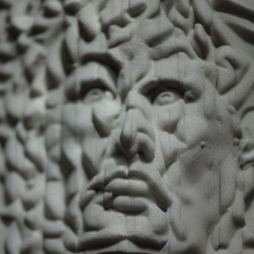

Open-Source Research · 2026
Shroud of Turin
AI Forensic Reconstruction
Extracting the face from the Shroud's depth-encoded image using computer vision and constrained AI generation.

What This Project Does
In 1976, scientists using the VP-8 Image Analyzer discovered that the Shroud of Turin encodes genuine three-dimensional information: image brightness is directly proportional to cloth-to-body distance. This means the Shroud is not a painting or photograph — it carries actual spatial data about the body beneath it.
This project builds an open-source pipeline that extracts that depth data, measures the facial geometry it encodes, and uses a depth-constrained AI to render sculptural reconstructions. The AI cannot invent facial structure — it is bound by the geometry the Shroud itself records.
Pipeline Overview
Depth Map Extraction
CLAHE contrast enhancement + normalization converts the photographic negative into a depth map where brightness encodes proximity to the cloth surface.
VP-8 3D Surface
150×150 downsample with Gaussian 15×15 smoothing produces the VP-8 style 3D surface — the same class of visualization that convinced STURP scientists in 1976.
Landmark Detection & Measurement
Novel depth-guided landmark detection (MediaPipe fails on Shroud data). Bilateral symmetry search locates the face midline; centerline profile walking identifies anatomy. Nine measurements cross-checked against forensic anthropology.
Constrained AI Reconstruction
Stable Diffusion 1.5 + ControlNet Depth at conditioning scale 0.95. The depth map guides the AI — facial structure cannot deviate from the recorded geometry. Rendered in neutral sculptural materials to eliminate pigmentation assumptions.
Scope Statement
This project extracts and visualizes the geometric information the Shroud encodes. It does not make claims about the Shroud's authenticity, the identity of the man depicted, or the mechanism of image formation. All measurements are presented with their uncertainties. All outputs are framed as data, not conclusions.
Two Independent Sources
The pipeline has been run on two completely independent source photographs taken 47 years apart — Enrie 1931 and Vernon Miller 1978 (STURP). Both produce consistent face geometry, providing cross-validation of the methodology.
